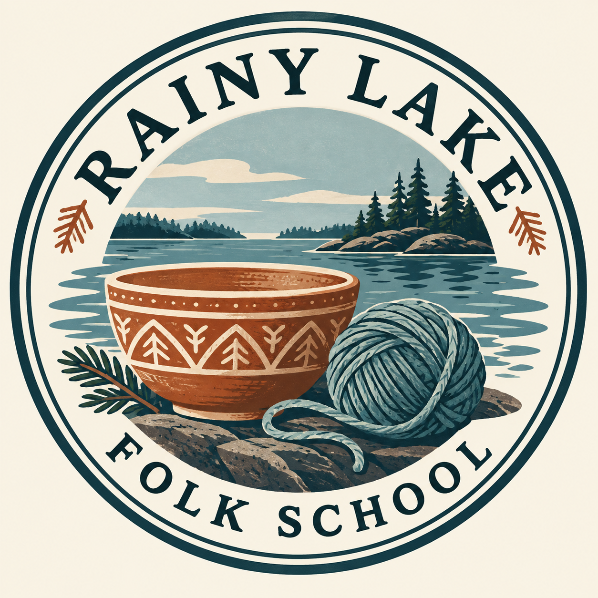

Heritage Arts & Crafts
Rug punching, lino-cut printing, plein air painting, fiber arts, baking, writing, and seasonal folk traditions.

Folk SchoolRainy Lake - International Falls, MN
Where old world moxie meets contemporary craftsmanship through heritage-forward skill building and community advancement.
About The Folk School
Mission: Offering VITAL instruction, training, and apprenticeships to under-supported rural populations — and heritage-forward classes, events, and excursions — towards sustainable tourism and community advancement.
Vision: Revitalization of the Rainy Lake area through heritage, skill, coalition-building, and local environmental and agricultural stewardship.
Vital instruction. Heritage-forward learning. Sustainable tourism. Community advancement.

Place-Based Learning
Ranier and International Falls are a historically vital border town near Voyageurs National Park and the Quetico-Superior boundary waters. The Wharf project builds on the area’s history, natural beauty, community pride, and need for new models of rural vitality.
Classes
Rug punching, lino-cut printing, plein air painting, fiber arts, baking, writing, and seasonal folk traditions.
Carpentry, 3D printing, technology, entrepreneurship, trades exposure, and hands-on learning labs.
Gardening, foraging, paddle craft, tackle building, food traditions, and intergenerational skill-sharing.
Get Involved
We are gathering ideas from future students, instructors, artists, makers, tradespeople, and community members as we build the first season of classes and workshops.
Tell us what classes, skills, workshops, and experiences you would love to see at The Wharf Folk School.
Student Interest FormShare your ideas for classes, workshops, demonstrations, field trips, or hands-on learning experiences you could lead.
Instructor Interest FormJoin us for upcoming community gatherings, celebrations, workshops, and special events at The Wharf Folk School & Event Center. More classes and activities will be added as we grow!
Fall 2026
Date: Saturday, October 10, 2026
Time: 1:00–6:00 PM
Location: The Folk School and participating businesses throughout Ranier, Minnesota
Join us for a festive afternoon celebrating Ranier's new businesses, local artists, makers, and the wonderful community along Rainy Lake!
This community celebration brings together The Wharf Folk School & Event Center, Backus Community Center, Cake & Crust Bakery, The Wild Muse, Looney's, and Rainy Lake Inn & Suites at Tara's Wharf.
The Wharf will offer hands-on creative activities, including:
Artists, farmers, makers, and local vendors are invited to showcase and sell their goods during Oktoberfest.
Holiday 2026
Date: Saturday, December 12, 2026
Location: Backus Community Center
Organized by: Backus Community Center and The Wharf Folk School & Event Center
Celebrate the holiday season with a festive Christmas Market bringing together local artists, musicians, makers, and community members.
Organized in collaboration with Backus Community Center, this special gathering will celebrate creativity, local talent, and the spirit of the season.
Enjoy handmade goods, community art, music, and holiday cheer while supporting local artists and businesses.
Additional information, including event times and vendor details, will be announced as plans are finalized.
Winter 2027
Winter at Rainy Lake is a special time to slow down, reconnect, and discover something new.
The Wharf is planning two seasonal retreats featuring wellness, creativity, practical learning, traditional skills, and community.
A refreshing winter retreat designed to provide time for creative reflection, relaxation, and personal wellness.
Retreat Activities
Location:
The Wharf Folk School & Event Center
Exact dates and retreat details will be announced as plans are finalized.
A winter retreat bringing together health and wellness, traditional handcrafts, practical skills, and learning opportunities with local tradespeople.
Retreat Activities
Location:
The Wharf Folk School & Event Center
Exact dates and retreat details will be announced as plans are finalized.
Support The Wharf
Your support helps create a community learning space where local knowledge, tourism, creativity, trades, entrepreneurship, heritage arts, and rural revitalization can meet.
Donate Through GivebutterDonations are securely processed through Givebutter. Donors automatically receive a donation receipt.

The Place


Membership
Memberships help support folk school learning, arts, heritage, and community gathering at The Wharf.
During our first membership year, members receive access to eligible Folk School classes. Some workshops may require separate materials, instructor, registration, or special-event fees.
Contact Us
We are gathering partners, instructors, volunteers, funders, artists, tradespeople, and community champions.
Staff at the Wharf